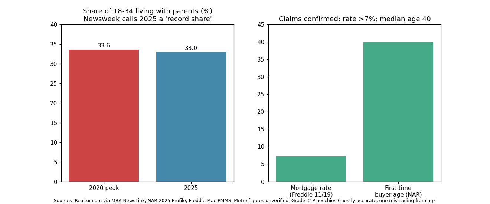

Newsweek's piece is largely faithful to Realtor.com, but it calls 2025's 33% a record share when Realtor.com's own record is 33.6% (2020). Only the number of people, 25.2 million, is a record. I verified the national figures, the NAR first-time buyer median age of 40 and the 7%+ mortgage rate. I could not verify the metro, regional, price-growth and expert-quote claims here. Grade: 2 Pinocchios. A primary check of the Realtor.com report or Census ACS/CPS tables would change this.
| Claim | Result |
|---|---|
| 25.2M ages 18-34, 33%, in 2025 | Confirmed (Realtor.com, secondary); share is NOT a record (33.6% in 2020) |
| Median first-time buyer age 40, record | Confirmed (NAR 2025 Profile, Jul 2024-Jun 2025) |
| Mortgage rates above 7% | Confirmed: Freddie Mac 7.28% on Nov 19, 2026 (7.11% Nov 12) |
| Metro shares (NYC 41.3% etc.), metro increases, regional changes, home price rises, 16-year down payment, Chan/Wachter/Jones quotes | Not checkable here: not found in any source I reached; Census data not pulled |
"Record share" conflates a record count with a record rate; population growth explains the count. Metro shares of ages 18-34 mix commute-zone and housing-market effects; ranking is descriptive, not causal.
Confidence: medium on confirmed items (secondary reporting of Realtor.com); low on the rest.